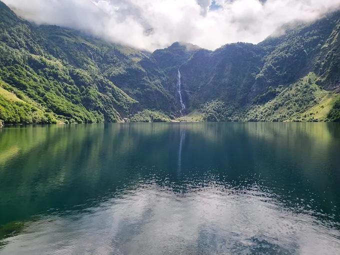
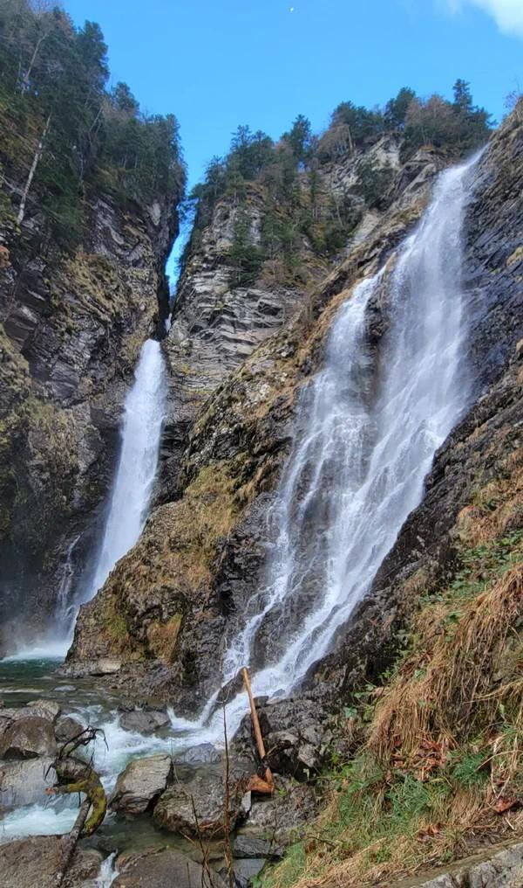

Toute l'annéeEn cours
Visite de la cathédrale
Saint-Bertrand-de-Comminges · 10h à 17h
Joyau du Comminges et étape majeure sur les chemins de Saint-Jacques-de-Compostelle.
 ~1 km
~1 km
Thermalisme depuis l'époque romaine, relancé au XVIIIe siècle par le baron d'Étigny : cures conventionnées, Vaporarium (galeries souterraines chauffées par la vapeur thermale) et espace détente au cœur du centre-ville.
En savoir plus & voir sur la carte →
 ≈25 min · 18 km
≈25 min · 18 km
Ski, glisse et raquettes à plus de 1 800 m d'altitude, par la route ou en télécabine (8 min de montée) depuis le fond de vallée. Table d'orientation avec vue sur le pic d'Aneto (3 404 m).
En savoir plus & voir sur la carte →
 ≈20 min · 17,7 km
≈20 min · 17,7 km
Deuxième domaine skiable à proximité, connu pour son altiport où une scène de James Bond « Demain ne meurt jamais » a été tournée — surnommé depuis « Altiport 007 ».
En savoir plus & voir sur la carte →

≈25 min · 15 kmRandonnée familiale incontournable (6,6 km A/R, 2h30-3h depuis les Granges d'Astau) jusqu'à un lac glaciaire à 1 507 m dominé par l'une des plus hautes cascades des Pyrénées (~275 m).
En savoir plus & voir sur la carte →

≈15 min · 10 kmLa cascade d'Enfer (70 m) est accessible à pied depuis le parking de la vallée du Lys. Plus au sud, l'Hospice de France (1 385 m) ouvre sur le GR10 et le port de Venasque, vers l'Espagne.
En savoir plus & voir sur la carte →
 à la carte
à la carte
VTT, escalade, via ferrata, parapente, canyoning, équitation et accrobranche pour tous les niveaux, toute l'année autour de la vallée.
Photo : Bagnères-de-Luchon, Tim Oun / Unsplash
En savoir plus & voir sur la carte →
 centre-ville
centre-ville
Les Allées d'Étigny (600 m de promenade plantée, 1762), le Casino (1878-1880, monument historique inscrit) et les marchés de producteurs du mercredi et samedi.
Photo : Bagnères-de-Luchon, Iñigo Telleria Perez / Unsplash
En savoir plus & voir sur la carte →
Informations vérifiées auprès de l'Office de Tourisme Pyrénées 31, des Thermes de Luchon et de sources publiques (Wikipédia, lacdoo.fr) — à recouper avant publication, ces informations (horaires, tarifs, accès) pouvant évoluer d'une saison à l'autre. Photos : clichés fournis par l'association pour les Thermes, Superbagnères, Peyragudes, le lac d'Oô et la vallée du Lys ; libres de droits (Unsplash) pour les autres.
À faire pendant votre séjour
Agenda mis à jour automatiquement chaque mois (dernière mise à jour : 20 octobre 2026) ; les événements passés disparaissent d’eux-mêmes. Sélection issue de l’agenda officiel de l’Office de Tourisme Pyrénées 31. Les dates et horaires pouvant évoluer, vérifiez auprès de l’organisateur avant de vous déplacer.
Saint-Bertrand-de-Comminges · 10h à 17h
Joyau du Comminges et étape majeure sur les chemins de Saint-Jacques-de-Compostelle.
Bagnères-de-Luchon et alentours
Luchon : mercredi et samedi matin. Cierp-Gaud : mardi matin. Producteurs et artisans locaux.
Bagnères-de-Luchon · 10h30 ou 14h15
Espace musée et salle des machines de la centrale du lac d'Oô. Gratuit, réservation obligatoire.
Bagnères-de-Luchon
« De Bagnères à Luchon », « Belle Époque », « Le thermalisme à Luchon »… Inscription à l'Office de Tourisme.
Le Mourtis

Photo d’illustration — Robert | Visual Diary / Unsplash
Barbazan
Artiste autodidacte inspirée par la nature. Gratuit.
Bagnères-de-Luchon · 10h30-12h30 et 15h-19h
Photographies. Du mardi au samedi. Gratuit.
Bagnères-de-Luchon · 10h30-12h30 et 15h-19h
Aquarelles et céramiques. Du mardi au samedi. Gratuit.
Bagnères-de-Luchon · 10h30-12h30 et 15h-19h
Mosaïque et fusing. Du mardi au samedi. Gratuit.

Photo d’illustration — Lizgrin F / Unsplash
Saint-Bertrand-de-Comminges · 16h
Les Timbrées de la voix et l'Ensemble vocal de la Neste. Au chapeau.
Cierp-Gaud · 21h
Pour la sortie du premier album du groupe Estornopic.
Saint-Bertrand-de-Comminges · 14h, 15h30 ou 17h
Montez à 16 mètres de hauteur pour approcher l'orgue de la cathédrale.
Fos · 20h30
Chœur d'hommes : chants pyrénéens, polyphonies basques, occitanes et catalanes.
Bagnères-de-Luchon · 21h
Les icônes féminines à travers le temps, au profit de l'association Elles « My Rose ».
Oré · dès 17h
Spectacle de magie et jonglerie, puis concert cumbia de Las Marmotas de la muerte. Au chapeau.

Photo d’illustration — Holly Mandarich / Unsplash
Saint-Pé-d'Ardet
Bagnères-de-Luchon
Découverte gratuite du Vaporarium ou d'un soin thermal. Réservation obligatoire.
Saint-Mamet · 15h à 17h
Tout public, sur réservation par téléphone.
Montauban-de-Luchon
Inscriptions ouvertes une semaine avant.
Le Mourtis

Photo d’illustration — Melanie Weidmann / Unsplash
Bagnères-de-Luchon · 14h à 20h
Attractions et gourmandises dans le parc du Casino.
Bagnères-de-Luchon · 15h30
Chants et danses traditionnels du Pays de Luchon. Au chapeau.
Bagnères-de-Luchon · 15h à 17h30
Collecte de friandises dans les commerces : « Des bonbons ou un sort ! »
Cierp-Gaud, Pointis, Frontignan, Martres, Boutx, Gourdan
Artisans, créateurs et produits du terroir, un week-end après l'autre.
Bagnères-de-Luchon · 18h à 23h
Dégustation de vin et animation musicale. Gratuit.
Bagnères-de-Luchon · 9h à 17h
Organisée par le Ciné Photo Club : de quoi renouveler son équipement à petit prix.
Bagnères-de-Luchon · 18h
Lancement des illuminations dans les rues et les parcs de la ville.

Photo d’illustration — Oksana Demenko / Unsplash
Saint-Bertrand-de-Comminges · 10h à 17h
Jeu d'Halloween autour de la cathédrale. Gratuit.
Bagnères-de-Luchon
Petit bassin chauffé et ludique. Inscription au Bureau des Sports de la Mairie.
Salechan · 14h à 16h
Au parc « Les Jours Heureux », en famille. Réservation obligatoire.
Saint-Bertrand-de-Comminges
Chasse au trésor, balade déguisée et goûter. Réservation obligatoire.
Bagnères-de-Luchon · 16h
Courts métrages pour les 4-6 ans.
Luchon-Superbagnères
Le Mourtis

Photo d’illustration — Domenico Adornato / Unsplash
Marignac · 15h
Par la Cie La Lune en Scène, sur la résistante Violette Szabo.
Bagnères-de-Luchon
Projections suivies de rencontres : « Ni vue ni connue », « Louve », « Le Cuirassé Potemkine »…
Saint-Aventin et Garin · 15h à 17h
Légendes, peintures et architecture. Inscription à l'Office de Tourisme.
Fos · 21h
Spectacle autour du montage d'un meuble en kit. Gratuit.
Gourdan-Polignan · 21h
Macbeth revisité par la compagnie OBRA. Gratuit.
Aucun événement à afficher pour le moment : consultez l’agenda de l’Office de Tourisme.